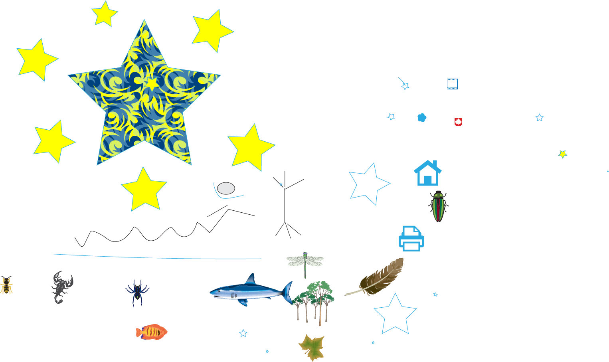
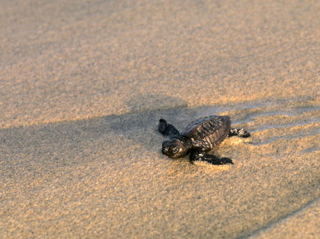
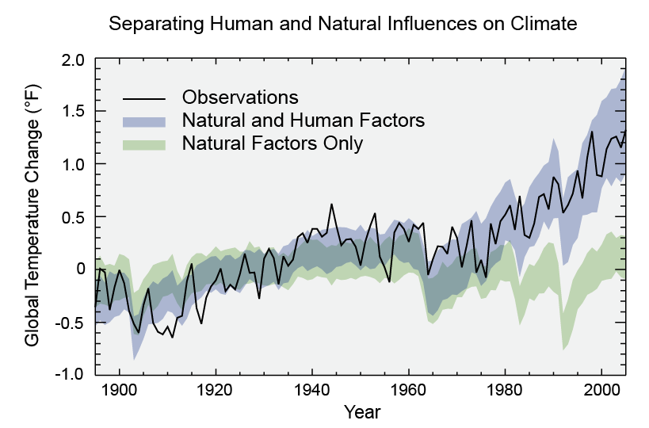

Climate Change
Climate change refers to any significant change in the measures of climate lasting for an extended period of time. In other words, climate change includes major changes in temperature, precipitation, or wind patterns, among others, that occur over several decades or longer.
The image below is an illustration of a beautiful environment with animals, houses, trees and stars.It depictes the hope that we can always make our environment safer despite the threats due to our activities on that environment.

Image by Rasmane Ouedrago Adobe Illustrator
Effects of Climate Change
- Sea levels are rising and oceans are becoming warmer
- Humans and wild animals face new challenges for survival because of climate change.
- Humans and wild animals face new challenges for survival because of climate change.
- More frequent and intense drought, storms, heat waves, rising sea levels, melting glaciers and warming oceans can directly harm animals, destroy the places they live, and wreak havoc on people’s livelihoods and communities.
- Climate change can affect human health in two main ways: first, by changing the severity or frequency of health problems that are already affected by climate or weather factors; and second, by creating unprecedented or unanticipated health problems or health threats in places where they have not previously occurre.

© WWF-US / Steve Morello
Causes
- Climate is influenced by natural changes that affect how much solar energy reaches Earth. These changes include changes within the sun and changes in Earth’s orbit.
- The Greenhouse Effects: When sunlight reaches Earth’s surface, it can either be reflected back into space or absorbed by Earth. Once absorbed, the planet releases some of the energy back into the atmosphere as heat (also called infrared radiation).
- Greenhouse gases like water vapor (H2O), carbon dioxide (CO2), and methane (CH4) absorb energy, slowing or preventing the loss of heat to space. In this way, GHGs act like a blanket, making Earth warmer than it would otherwise be. In sum it causes the atmosphere to retain heat.
- It is important to notice that climate change is mostly due to humain activities as shown by the diagram below.
- It is important to notice that climate change is mostly due to humain activities as shown by the diagram below.

EPA
What to do to Stop Climate Change
- There are many ways we can stop climate change:
- Be energy efficient You already switch off lights — what is next? Change light bulbs to compact fluorescents or LEDs. Unplug computers, TVs and other electronics when not in use. Wash clothes in cold or warm (not hot) water. Dryers are energy hogs, so hang dry when you can. Install a programmable thermostat. Look for the Energy Star label when buying new appliances. And a home energy audit is cheaper than you think — book one today to find even more ways to save energy.
- Choose renewable power: Ask your utility to switch your account to clean, renewable power, such as from wind farms. If it doesn’t offer this option yet, ask it to.
- Eat wisely:Buy organic and locally grown foods. Avoid processed items. Grow some of your own food. And eat low on the food chain — at least one meat-free meal a day — since 18 per cent of greenhouse gas emissions come from meat and dairy production. Food writer Michael Pollan sums it up best: “Eat food. Not too much. Mostly plants.”
- Trim your waste: Garbage buried in landfills produces methane, a potent greenhouse gas. Keep stuff out of landfills by composting kitchen scraps and garden trimmings, and recycling paper, plastic, metal and glass. Let store managers and manufacturers know you want products with minimal or recyclable packaging.
- Let polluters pay:Carbon taxes make polluting activities more expensive and green solutions more affordable, allowing energy-efficient businesses and households to save money. They are one of the most effective ways to reduce climate impact. If your country doesn’t have a carbon tax, ask your premier or authorities to implement one.
- Fly less:Air travel leaves behind a huge carbon footprint. Before you book your next airline ticket, consider greener options such as buses or trains, or try vacationing closer to home. You can also stay in touch with people by videoconferencing, which saves time as well as travel and accommodation costs.
- Get informed: Follow the latest news about climate change.This will help you remain in touch with the real world.
- Green your commute:Transportation causes about 25 per cent of greenhouse gas emissions, so walk, cycle or take transit whenever you can. You’ll save money and get into better shape! If you can’t go car-free, try carpooling or car sharing, and use the smallest, most fuel-efficient vehicle possible.
- The image below shows peoplple walking for climate ,asking everyone to act now better than later in order to stop climate change.

DAVID SUZUKI
Conclusion
Climate change impacts all parts of the world, and finding solutions to the challenges posed by such an immense threat will require action from every country. Annual international climate talks are key to effectively addressing the problem.It is then time to react togogheter for climate.